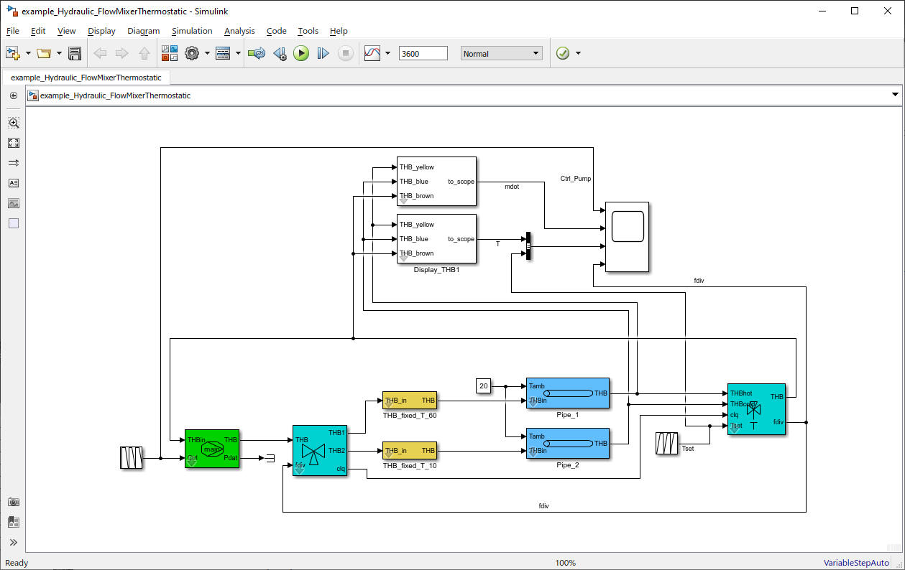

Flow_Mixer_Thermostatic
Path: CARNOT/Hydraulics
Purpose:
The thermostatic flow mixer valve mixes cold and hot fluid to achive a
desired temperature at the outlet.
Description:
The block uses the Flow_Mixer_basic
block to calculate the mixture of the fluids and the mass flow diversion.
The outlet temperature is controlled by an integral control.
If Tset is higher than the temperatures of THBhot, the maximum temperature
the outlet is the temperature of THBhot.
The model calculates the pressure drop in the hot and cold branch and
gives this information to the Flow_Diverter.
For a correct flow diversion connect :
The corresponding Flow_Diverter is the flow mixer which separates
the flow in two branches THB1 and THB2.

Input:
| THBhot | : | Thermo-Hydraulic Bus of branch 1 with the hot fluid |
| THBcold | : | Thermo-Hydraulic Bus of branch 2 with the cold fluid |
| clq | : | Bus with massflow and pressure drop coefficients of the THB before it was separated in THB1 (THBhot) and THB2 (THBcold) |
| Tset | : | temperature set point in °C for the mixing valve controller |
Output:
| THB | : | Thermo-Hydraulic Bus of the mixed flow |
| fdiv | : | Flow division rate for the corresponding Flow_Diverter |
| clq_ | : | bus with massflow and pressure drop coefficients in THB (information is needed by the corresponding flow mixer) |
Parameters and Dialog Box:
Examples:
Open the example explorer from the Matlab command window
ExampleBrowser
or load the examples via the CARNOT library.
Characteristics:
| Direct Feedthrough | : | Yes |
| Sample Time | : | Inherited from driving block |
| Vectorized | : | No |